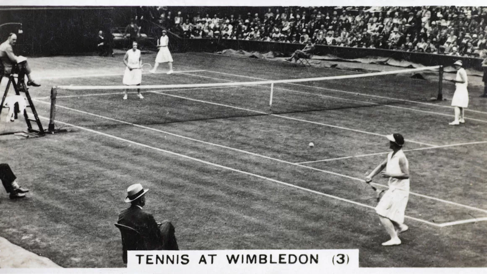
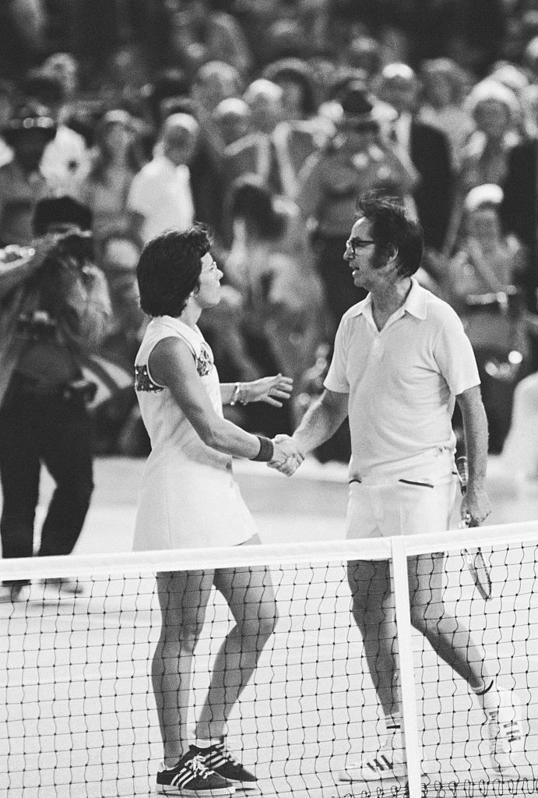

Tennis is believed to have originated during 12th or 13th century in France. However, it was played by
Major Walter C. Wingfield, in an hourglass shaped court in 1873 in Great Britain. It seems to have
evolved from similar ancient sports like court tennis, squash racquets and badminton.
In 1877, the All England Croquet Club held a Tennis championship in a rectangular court with rules
similar to that of modern Tennis. It quickly spread to America, Britain, and later to other parts of the
world.
Davis Cup, an international tennis tournament, was held in 1900 to promote the game all over the world.
On March 1st, 1913, International Tennis Federation (ITF), the international governing body of Tennis
was established. It formulates rules to be followed by all the players participating in competitions
throughout the world. It also sets guidelines, defines the kind of equipment used in the sport, and
defines court dimensions.
Tennis is a sport played among two players or two pairs of players competing with each other in a
rectangular tennis court with fixed boundaries. The two sides of the court are separated with a net. The
sport involves shooting a tennis ball towards the other side of the court with a tennis racket. The ball
has to fall within the court boundaries. Players gain a point when the opposite team or player fails to
deliver the ball to the opponent.
Tennis tests players in delivering the ball in the intended direction and in defending the ball
delivered by their opponent.

Helen Wills-Moody in the ladies doubles at the 1932 Wimbledon tournament
Game Overview
Basic Rule
The game starts with a coin toss to determine which player must serve first and which side they want to
serve from.
The server must then serve each point from alternative sides on the base line. At no point must the
server’s feet move in front of the baseline on the court prior to hitting their serve.
If the server fails to get their first serve in they may take advantage of a second serve. If they
again fail to get their second serve in then a double fault will be called and the point lost.
If the server clips the net but the ball goes in the service area still then let is called and they get
to take that serve again without penalty. If the ball hits the net and fails to go in the service area
then out is called and they lose that serve.
The receiver may stand where they wish upon receipt of the serve. If the ball is struck without the
serve bouncing then the server will receive the point.
Once a serve has been made the amount of shots between the players can be unlimited. The point is won
by hitting the ball so the opponent fails to return it in the scoring areas.
Points are awarded in scores of 15, 30 and 40. 15 represent 1 point, 30 = 2 and 40 = 3. You
need 4 points to win a game. If a game lands on 40-40 it’s known as deuce. From deuce a player needs to
win 2 consecutive points to win the game. After winning one point from deuce they player is on
advantage. If the player wins the next point they win the game, if they lose it goes back to deuce.
To win the set a player must win 6 games by 2 or more. The opening sets will go to a tie break if its
ends up 6-6 where players play first to 7 points. The final set will not have a tie break and requires
players to win by two games with no limits.
If a player touches the net, distracts his opponent or impedes in anyway then they automatically lose
the point.
The ball can hit any part of the line for the point to be called in, outside the line and the ball is
out.
The balls in a tennis match are changed for new balls every 6 games
A player loses a point if they fail to return the ball in either the correct areas on the court, hits
the net and doesn’t go into opponent’s area or fails to return the ball before it bounces twice in their
half.
Score
You need to score four points to win a game of tennis.
The points are known as 15 (1 point), 30 (two points), 40 (three points) and the fourth would result in
the winning point and the end of that game.
If the scores went to 40-40 this would be known as deuce. When a game reaches deuce the player must then
win by two clear points.
Players & Equipment
A tennis match can be played by either one player on each side – a singles match – or two players on each
side – a doubles match. The rectangular shaped court has a base line (at the back), service areas (two
spaces just over the net in which a successful serve must land in) and two tram lines down either side. A
singles match will mean you use the inner side tram line and a doubles match will mean you use the outer
tram line.
A court can be played on four main surfaces including grass, clay, hard surface and carpet. Each tournament
will choose one surface type and stick without throughout. All that is required in terms of equipment is a
stringed racket each and a tennis ball.
Tournaments
Major Tennis Tournaments
Wimbledon
US Open
Australian Open
French Open
Summer Olympics Tennis Tournament
BNP Paribas Open
WTA Finals
ATP Finals
Laver Cup
Grand Slam Tournaments
Wimbledon – All England Club, London
Wimbledon, dating back to 1877, is the most famous tennis tournament played on grass courts. It's
one of the four major tennis tournaments (Grand Slams) held over two weeks in early summer,
attracting the best players and hosting iconic matches.
US Open – National Tennis Center, New York
The US Open, the last Grand Slam of the season, is the most famous professional US tournament with a
lively atmosphere. Played in late August/early September at the US National Tennis Center, it offers
a unique experience for fans.
Australian Open – Melbourne Park, Melbourne
The Australian Open, the first Grand Slam of the year, is a bucket list event played on hard courts.
Held at Melbourne Park since 1988, it's known for high attendance and Novak Djokovic's
record-breaking ten wins.
French Open – Roland Garros, Paris
The French Open, played on clay courts, is the only Grand Slam different from the others. It's known
for Rafael Nadal's dominance and takes place in the beautiful city of Paris, making it a truly
special event. The 2024 French Open is from May 26th to June 9th.
Other Major Tournaments
Summer Games Tennis Tournament – Roland Garros, Paris
The Summer Games tennis is unique because it's part of a wider sporting event offering an
incomparable atmosphere. Tennis returned to the Summer Games in 1988 and has been a staple ever
since. The 2024 Summer Games will be in Paris from July 26 to August 11th, with the tennis
tournament held at Roland Garros.
BNP Paribas Open – Indian Wells Tennis Garden, Indian Wells
The BNP Paribas Open, a major tournament attracting top players and fans, is held in Indian Wells,
California. This "Tennis Paradise" location offers luxury resorts, world-class amenities, and
stunning weather, making it a perfect late winter getaway.
ATP Finals – Inalpi Arena, Turin
The ATP Finals, dating back to 1970, features a different format than Grand Slams. Played in a group
stage followed by semi-finals and finals, it offers a unique viewing experience. The current
location is Turin, Italy.
WTA Finals – Venue TBA, Riyadh
The WTA Finals, the concluding tournament of the Women's Tennis Association season, is played in a
similar format to the ATP Finals. The 2024 tournament will be held in Riyadh, Saudi Arabia.
Laver Cup – Uber Arena, Berlin
The Laver Cup, a team event established in 2017, pits players from Europe against players from the
rest of the world. Played over a weekend on an indoor court, it's a fun and exciting tournament. The
2024 Laver Cup will be held in Berlin.
Highlights
Memorable Moments
The Battle of the Sexes - 1973

On September 20, 1973, Billie Jean King faced off against Bobby Riggs in a match that became known as the
"Battle of the Sexes". King won the match in straight sets, which was seen as a significant event in the
movement for gender equality.
Rafael Nadal's 13th French Open Title - 2020
Rafael Nadal secured his 13th French Open title in 2020, defeating Novak Djokovic in the final. This
victory tied him with Roger Federer for the most Grand Slam titles in men's singles history at that
time, with 20 each.
Roger Federer's 8th Wimbledon Title - 2017
In 2017, Roger Federer won his 8th Wimbledon title, becoming the first man to win eight singles titles at
the prestigious tournament. He defeated Marin Cilic in the final, further cementing his legacy in tennis
history.
Key Players
Roger Federer
Roger Federer is widely regarded as one of the greatest tennis players of all time. Known for his grace
and versatility on the court, he has won 20 Grand Slam singles titles, including a record eight
Wimbledon titles.
Serena Williams
Serena Williams is one of the most dominant players in the history of tennis. She has won 23 Grand Slam
singles titles, the most by any player in the Open Era, and has been a trailblazer for women's sports.
Rafael Nadal
Rafael Nadal, known as the "King of Clay", has won 22 Grand Slam singles titles, including a record 14
French Open titles. His intense playing style and tenacity have made him a fan favorite worldwide.
Getting-Started
Getting Started with Tennis
Equipment Needed
To start playing tennis, you’ll need a few essential items:
Tennis Racket: Choose a racket that fits your skill level and playing style.
Tennis Balls: Get a can of tennis balls to practice with.
Proper Attire: Wear comfortable, breathable clothing and tennis shoes with good
support.
Basic Strategies
Here are some basic strategies to help you get started:
Consistency: Focus on hitting the ball consistently over the net.
Footwork: Good footwork is crucial. Practice moving quickly and efficiently around
the court.
Positioning: Learn to position yourself correctly to return shots effectively.
Beginner Tips
These tips can help you improve your game as a beginner:
Practice Regularly: Consistent practice is key to improving your skills.
Take Lessons: Consider taking lessons from a coach to learn proper techniques and
avoid developing bad habits.
Watch and Learn: Watch professional matches to observe how top players play and
learn from their techniques.
Tennis Quiz
Who has won the most Grand Slam titles in men's singles tennis?